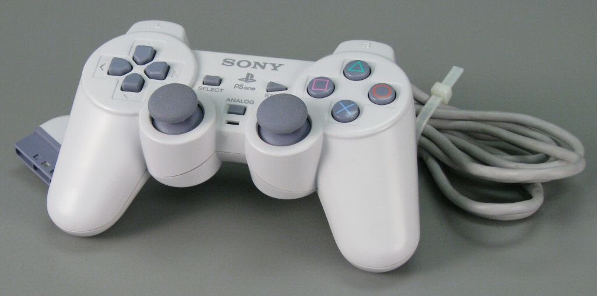
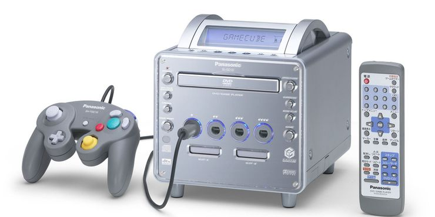

Sony Playstation 1 (1996)
Released in 1996, one of the first 3D home video game consoles ever made. Also it was Sony first time entering the console market. What makes the Playstation 1 stand out among others is the libraryof games. Iconic games such as Crash Bandicoot, Spyro, Tomb Raider and countless of others. In 2021 the Playstation 1 is a great start for retro collecting as it is not arare consoles to find and the games we sell on this site would be a great addition to your purchase. If you want to relive the 90s more, the Playstation 1 can also play your CDs, pretty cool huh?
Bonus PS1 Fact
With the transition from 2D pixel games from the late 80s to early 90s, the PS1 was home for 3D games. Due to this, the playstation one controller needed a redesign. The playstation one controller is called the Duelshock. When the console first released, the duelshock controller was flat. With the d-pad buttons on left side used to move characters across the screen in 2D games. Designer Teiyu Goto thought 3D environments world require 3D controllers. He gave the Dualshock two angled grips, shoulder buttons, and a second analog stick to control the camera.
My Top 10 Playstation One Games
- Crash Bandicoot
- Silent Hill
- Toy Story 2
{kind=link}
| Consoles Release by Sony from 1996 - 2021 | Relase Year |
|---|---|
| Sony Playstation 1 | 1996 |
| Sony Playstation 2 | 2000 |
| Sony Playstation 3 | 2005 |
| Sony Playstation 4 | 2013 |
| Sony Playstation 5 | 2020 |
{kind=link}
Nintendo Gamecube (2001)
Released in 2001 by Nintendo after the success of their previous home console the N64. That old console used cartriges for their games, but Nintendo this time chosen to use disc to compete with the Sony Playstation 2. Much beloved Nintendo series like Super Mario, Legend of Zelda and Pokemon have their own games on the Gamecube. With a interesting console design, the controller and variety of games that still great in 2021. The Nintendo Gamecube is the definition of not following the competition and doing something unquie in their own way.
Bonus Gamecube Fact
A criticism that the Gamecube recieved was the lack of a DVD player. In the earlier 2000s, Sony Playstation 2 and Microsoft Xbox allowed DVDs to play on home tvs. This increase sales numbers for Sony and Microsoft because it was a cheaper deal than buying an actual dvd player at the time. However there was a short-lived version of the Gamecube called Panasonic Q. It was exclusive only in Japan but disconnected within two years due to poor sales. It is now seen as a rare item for collectors.

Gamecube Statistics
- Sold 21.74 Million Units Worldwide
- Lifespan was from 2001–2007 (6 years)
- Super Smash Bros Melee Is The Best Selling Gamecube Game, With 7.09 million copies shipped

| Consoles Release by Nintendo from 1987 - 2021 | Relase Year |
|---|---|
| Nintendo Entertainment System | 1987 |
| Super Nintendo Entertainment System | 1992 |
| Nintendo 64 | 1996 |
| Nintendo Gamecube | 2000 |
| Nintendo Wii | 2007 |
| Nintendo Wii U | 2012 |
| Nintendo Switch | 2017 |
{kind=link}
Microsoft Xbox(2002)
Released in 2002 by Microsoft after seeing the sucess from Sony and Nintendo consoles, they wanted a piece of the market. Out of all consoles from the early 2000s, the Xbox was the most powerful console in the market.With better graphics and a more stable framerate. You could say it was a multimedia device as it also played CDs and DVDs. Most importantly it was the first console to introduce online multiplayer, changingthe game industry. Xbox is also the home to one of most iconic gaming franchises, Halo.
Halo: Combat Envolved (2001) vs Halo: Combat Envolved Anniversary (2011)
This silder allows you to view the graphics of the original game running on the original Xbox on the left. On the right is the Anniversary Edition of the game, a remake done to celebrate the games's 10th anniversary. It is quite interesting to see how much the graphics change within that decade.


{kind=link}
| Consoles Release by Microsoft from 2001 - 2021 | Relase Year |
|---|---|
| Microsoft Xbox | 2002 |
| Microsoft Xbox 360 | 2006 |
| Microsoft Xbox One | 2013 |
| Microsoft Xbox Series S & X | 2020 |